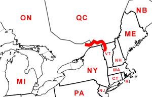

Day Forty-Two
Ottawa, ON - Burlington, VT
Date: 07/22/2002
Distance: 236 miles
Weather: Partly sunny. Mid 80's
We left the Days Inn and drove through downtown Ottawa. Then into our last Canadian province, Québec.
We drove through the city of Montréal. It seemed to be very nice. Very nice buildings and clean. Well, clean until Ogden came.
We went exploring down the city streets and Ogden chose a very poor time to "do her business". Unable to leave her in the car due to the heat, we decided we better explore Montréal another day without the dog.
We continued on to Mimi's (Jared's Mom) house in Burlington, VT. We had our licenses, passports and dog papers prepared, but the border checkpoint guy only wanted to know where Corin went to College. He seemed happy enough about Smith, and let us through with no hesitation.
There were also four men in bright orange prison issue jumpsuits, and Missouri plates, in the car next to us. No matter where they went to college, they didn't enter the USA with any degree of ease.
We arrived at Mimi's house and relaxed for bit. Then to cool down, we headed down to Lake Champlain for a dip. Ogden, without any coaxing, went swimming, and fetched her toy in the water. We were very proud.
We then went to explore the shops on Church street and later met up with Mimi and Skip for dinner at Three Tomatoes.
After a few rounds of the game Taboo and some Ben & Jerry's ice cream we were exhausted.